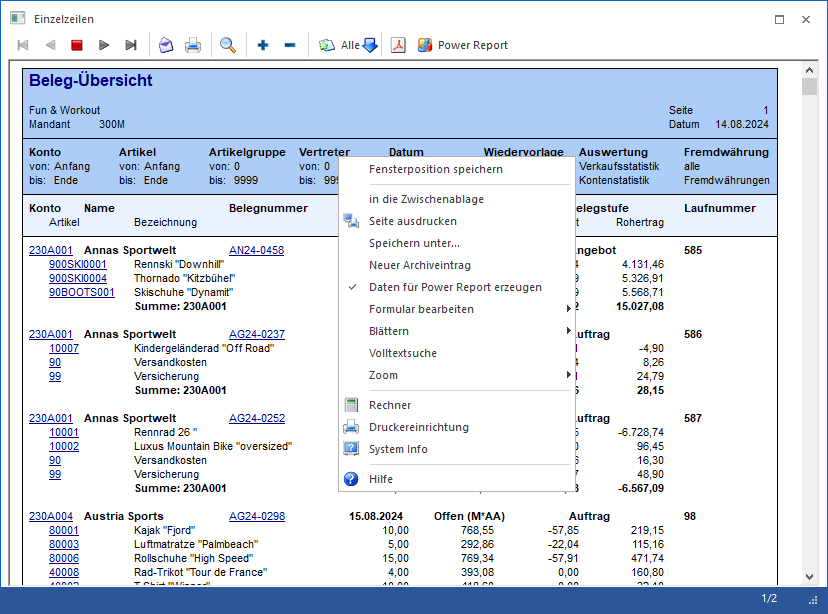
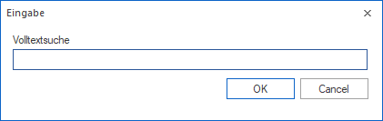
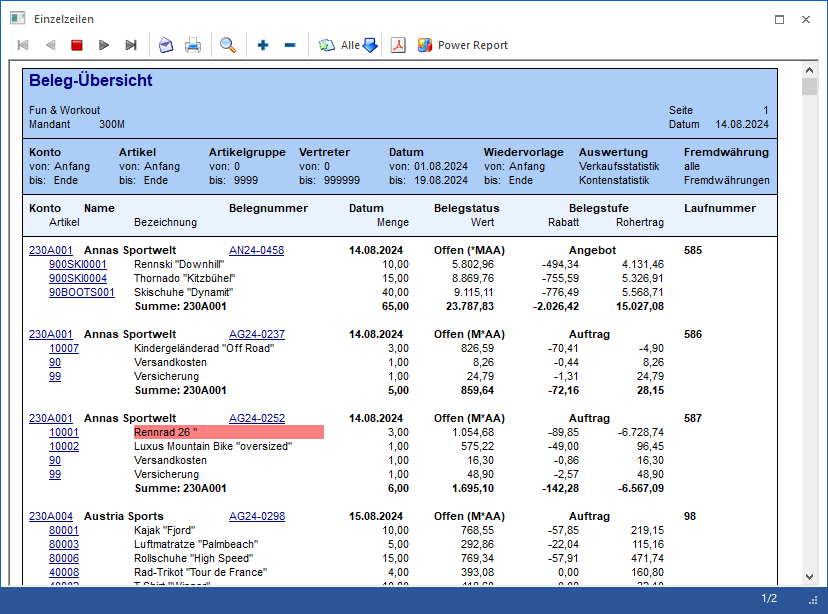

Wenn ein Ausdruck auf dem Bildschirm gemacht wird, stehen andere Funktionen zur Verfügung.

Ø in die Zwischenablage
Mit dieser Funktion wird der Inhalt des Bildschirmausdruckes (nur die aktuelle Seite) in die Zwischenablage kopiert und steht dann in anderen Programmen (z.B. MS Excel) zur Übernahme zur Verfügung.
Ø Seite ausdrucken
Damit kann die aktuelle Bildschirmseite direkt an den Drucker gesendet werden.
Ø Speichern unter...
Mit dieser Funktion kann der Bildschirmausdruck in einer Datei gespeichert werden, wobei folgende Formate zur Verfügung stehen:
ü mesonic Spooldatei (*.spl)
ü Webseite, komplett (*.htm; *.html)
ü Webarchiv, einzelne Datei (*.mht)
ü mesonic Spooldatei Version 2.0 (*.spl)
ü Acrobat Reader (*.pdf)
ü Microsoft Word (*.rtf)
ü Richtext Format (*.rtf)
ü Tabulatorgetrennter Text (*.txt)
ü Nur Text (*.txt)
Ø Neuer Archiveintrag
Mit dieser Funktion wird die Vorschau in das Archiv verschoben. Nachdem der Eintrag erfolgreich archiviert worden ist, wird das Fenster "Dokumenten-Beschlagwortung" geöffnet, in dem die Beschlagwortung hinterlegt werden kann.
Ø Daten für Power Report erzeugen
Mit Hilfe dieser Funktion kann definiert werden, ob die Daten für den Power Report im Hintergrund aufbereitet werden sollen. Die Speicherung erfolgt benutzerspezifisch pro Formular und wird ab der darauffolgenden Ausgabe angewandt.
Ø Formular bearbeiten
Jeder Ausdruck in der WinLine ist frei definierbar. Wird ein Ausdruck am Bildschirm gemacht, kann dieser unter Verwendung der Funktion "Formular bearbeiten" im Formular Editor umgestaltet werden, wobei hier nicht nur das aktuelle Formular geöffnet werden kann, sondern auch alle artverwandten Formulare. Nach dem Speichern des Formulars im Formular-Editor muss der Ausdruck nur neu gestartet werden - die Änderungen sind bereits enthalten.
Achtung
Diese Funktion steht nur Benutzern des Typs "Administrator" oder mit der Administratorenberechtigung "Formularadministrator" zur Verfügung. Außerdem kann die Funktion nicht über das Despoolen angewandt werden.
Ø Blättern
Dieser Eintrag steht nur dann zur Verfügung, wenn am Bildschirm ein mehrseitiges Dokument ausgegeben wird. Damit kann zwischen den einzelnen Seiten geblättert werden, wobei die Optionen "Erste Seite", "Zurück", "Vor" und "Letzte Seite" zur Verfügung stehen. Sinnvollerweise kann diese Funktion auch über die Tastatur ausgeführt werden.
ü STRG + Bild-nach-Oben /
Bild-nach-Unten
Innerhalb einer Druckvorschau kann mit Hilfe der
Tastenkombination STRG + Bild-nach-Oben bzw. STRG + Bild-nach-Unten zwischen den
Seiten geblättert werden, sofern mehrere Seiten vorhanden sind.
ü STRG + ENDE / POS 1
Mit der
Tastenkombination STRG + ENDE kann innerhalb einer Druckvorschau auf die letzte
Seite gesprungen werden; mit STRG + POS 1 auf die erste Seite. Dieses ist
natürlich nur dann möglich, wenn mehrere Seiten vorhanden sind.
Ø Volltextsuche
Durch Anwahl der Funktion "Volltextsuche" kann innerhalb des gesamten Dokuments nach einem Begriff gesucht werden. Wurde die Suche ausgeführt und nochmals "Volltextsuche" angewählt, so wird die Suche fortgesetzt. Wenn Treffer vorhanden sind, dann werden die während es Suche markiert.

Beispiel
Es wurde nach dem Begriff "Rennrad" gesucht.

Ø Zoom
Mit Hilfe der Funktionen des Bereichs "Zoom" kann das am Bildschirm dargestellte Formular vergrößert oder verkleinert werden. Es handelt sich hierbei um eine rein optische Funktionalität, d.h. dieses hat keine Auswirkung auf einen möglichen Druck.
ü 1:1
Das Formular wird in der
Standardgröße dargestellt.
ü 2:1
Das Formular wird doppelt
so groß dargestellt.
ü 3:1
Das Formular wird drei Mal
so groß dargestellt.
ü Ganze Seite
Durch Anwahl der
Option "Ganze Seite" passt sich das dargestellte Formular an die aktuelle
Fenstergröße an, so dass eine Gesamtansicht entsteht. Um die Standard-Ansicht
wiederherzustellen, muss die Funktion "1:1" oder "Zoomfaktor zurücksetzen"
angewählt werden.
ü Zoomfaktor speichern
Mit Hilfe
dieser Funktion wird der aktuelle Zoomfaktor gespeichert und bei der nächsten
Anzeige des Formulars entsprechend angewendet. Die Speicherung erfolgt pro
Formular benutzerspezifisch und mandantenunabhängig.
ü Zoomfaktor zurücksetzen
Bei
Anwahl der Funktion "Zoomfaktor zurücksetzen" wird der gespeicherte Zoomfaktor
des aktuellen Formulars gelöscht und die Anzeige auf das Verhältnis "1:1"
zurückgesetzt.
Hinweise
Folge Punkte sind beim Zoom zu beachten:
ü Neben dem Kontextmenü kann das Vergrößern bzw. Verkleinern auch über die Kombination STRG-Taste + Mausrad erfolgen.
ü Die Speicherung des Zoomfaktors erfolgt im Despoolen separat, d.h. der Zoom zwischen klassischer Bildschirmausgabe und Betrachtung im Spooler kann voneinander abweichen.
ü Der Zoom steht im Register "Quick" der Belegerfassung und im OIF-Bereich von individuellen Formularen nicht zur Verfügung.
ü Der Zoom steht in der WinLine mobile generell nicht zur Verfügung.